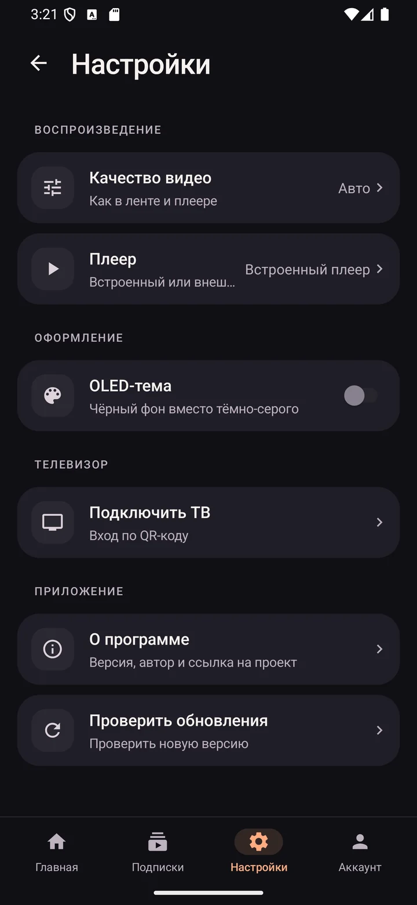
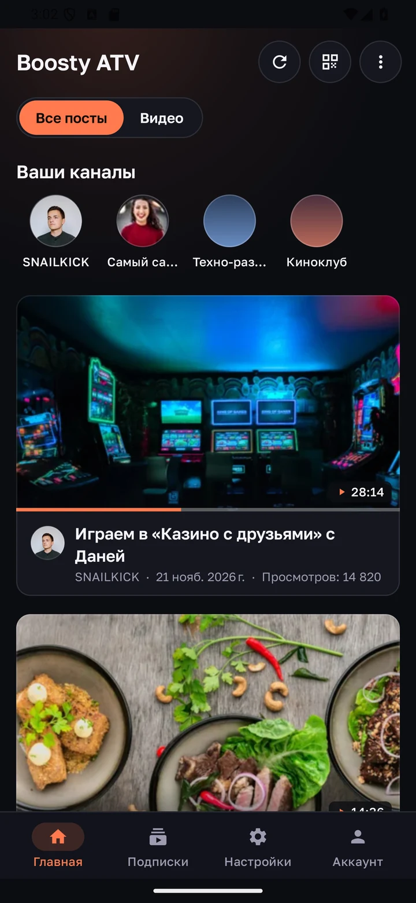

Один APK — два экрана
Телефон, планшет и Android TV. На ТВ интерфейс перестраивается под пульт: крупные карточки, фокус и управление с джойстика.
Неофициальный клиент Boosty · Android
Лента подписок, встроенный плеер и память о том, где вы остановились. Тёмная тема, внешние плееры и пульт вместо мыши.


Возможности
Один APK для телефона и телевизора. Без рекламы, аналитики и обязательного Google Play.
Телефон, планшет и Android TV. На ТВ интерфейс перестраивается под пульт: крупные карточки, фокус и управление с джойстика.
HLS, DASH и MP4. Качество, скорость, аудиодорожки, субтитры и точная перемотка — в одном экране.
Позиция сохраняется на устройстве и синхронизируется с Boosty. На карточках виден прогресс.
Лента каналов, режим «только видео», поиск по названию и теги. Ничего не теряется при обновлении.
Отдельная тема с настоящим чёрным фоном для OLED-экранов и телевизоров. Переключается в настройках.
VLC, MX Player, ViMu и Just+ Player. Приложение передаёт позицию и забирает её обратно.
Обсуждения открываются под видео, ответы раскрываются на месте. Реакции можно ставить, менять и убирать.
Приложение само проверяет новые версии и предлагает обновиться — без похода в GitHub.
Интерфейс
Тёплый тёмный фон, один акцент и крупные цели для пальца. Никаких лишних панелей поверх контента.

Android TV
Крупные карточки, навигация пультом и фокус, который видно с дивана. Вход по QR-коду с телефона — без ввода пароля с пульта.

Установка
Скачайте APK и разрешите установку из неизвестных источников. Google Play и аккаунт не нужны.
На телефон или USB-накопитель для телевизора.
Android спросит подтверждение для файла из браузера.
По номеру телефона или QR-коду с другого устройства.
Вопросы
Нет. Boosty ATV — неофициальный клиент с открытым исходным кодом. Он не связан с Boosty и не заменяет официальные приложения.
Нет. Достаточно скачать APK. На Android TV файл можно установить через файловый менеджер или ADB.
Релизы подписаны одним ключом. Новая версия устанавливается поверх старой и сохраняет вход и историю просмотра.
Да. В нём нет рекламы, встроенных покупок и аналитики. Исходный код доступен на GitHub.